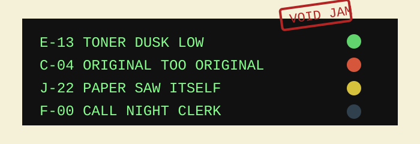

service drawer / laminated strip
Copier error codes, transcribed from the green display
Do not unplug the machine while it is remembering a jam. That only makes the jam historical.

| Code | Plain meaning | Human procedure |
|---|---|---|
| E-13 | Toner dusk low | Rock cartridge gently, like waking a cat that owes rent. |
| C-04 | Original too original | Place a blank sheet behind it. Reduce contrast one notch. |
| J-22 | Paper saw itself | Open left door. Remove accordion from teeth. Do not keep as souvenir. |
| F-00 | Night clerk required | Ring bell once. If bell rings back, wait in lobby. |
| L-7 | Lens has opinion | Clean glass, close cover, copy at 93%. |
Known noises
Soup boiling: normal warmup. Staples in a blender: tray three. Distant applause: drum unit near end of life. Someone whispering legal names: remove original from feeder.